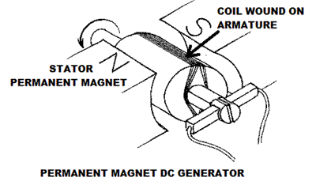
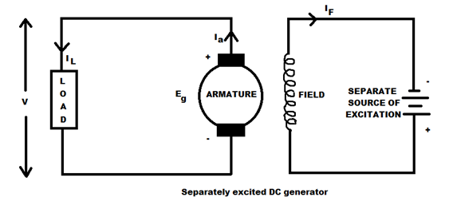
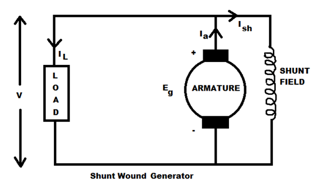
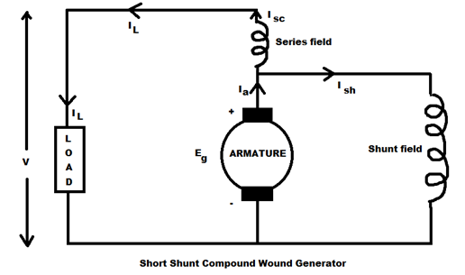
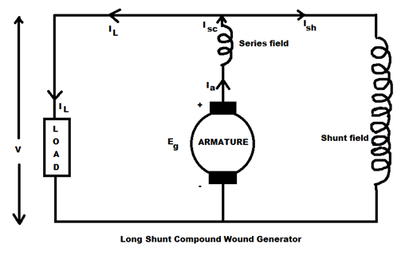
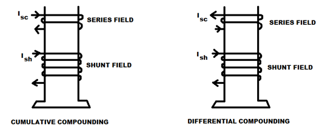

Separately Excited DC Generator
Self-excited DC Generators
Series Wound Generator
Shunt Wound DC Generators
Compound Wound DC Generator
Short Shunt Compound Wound DC Generator
Long Shunt Compound Wound DC Generator
Generally DC generators are classified according to the ways of excitation of their fields. There are three methods of excitation.
i. Field coils excited by permanent magnets – Permanent magnet DC generators
ii. Field coils excited by some external source – Separately excited DC generators
iii. Field coils excited by the generator itself – Self excited DC generators
A brief description of these type of generators are given below…
Permanent Magnet DC Generator

When the flux in the magnetic circuit is established by the help of permanent magnets then it is known as Permanent magnet dc generator. It consists of an armature and one or several permanent magnets situated around the armature. This type of dc generators generates very low power. So, they are rarely found in industrial applications. They are normally used in small applications like dynamos in motor cycles.
Separately Excited DC Generator
These are the generators whose field magnets are energized by some external dc source such as battery .
A circuit diagram of separately excited DC generator is shown in figure.
Ia = Armature current
IL = Load current
V = Terminal voltage
Eg = Generated emf

Voltage drop in the armature = Ia × Ra (R/sub>a is the armature resistance)
Let, Ia = IL = I (say)
Then, voltage across the load, V = IRa
Power generated, Pg = Eg×I
Power delivered to the external load, PL = V×I.
Self-excited DC Generators
These are the generators whose field magnets are energized by the electric current supplied by themselves. In these type of machines field coils are internally connected with the armature. Due to residual magnetism some flux is always present in the poles. When the armature is rotated some emf is induced. Hence some induced electric current is produced. This small electric current flows through the field coil as well as the load and thereby strengthening the pole flux. As the pole flux strengthened, it will produce more armature emf, which cause further increase of electric current through the field. This increased field electric current further raises armature emf and this cumulative phenomenon continues until the excitation reaches to the rated value.
According to the position of the field coils the Self-excited DC generators may be classified as…
A. Series wound generators
B. Shunt wound generators
C. Compound wound generators
Series Wound Generator
In these type of generators, the field windings are connected in series with armature conductors as shown in figure below. So, whole electric current flows through the field coils as well as the load. As series field winding carries full load current it is designed with relatively few turns of thick wire. The electrical resistance of series field winding is therefore very low (nearly 0.5Ω ).
Let,
Rsc = Series winding resistance
Isc = Current flowing through the series field
Ra = Armature resistance
Ia = Armature current
IL = Load current
V = Terminal voltage
Eg = Generated emf
Then, Ia = Isc = IL=I (say)
Voltage across the load, V = Eg -I(Ia×Ra)
Power generated, Pg = Eg×I
Power delivered to the load, PL = V×I
Shunt Wound DC Generators
In these type of DC generators the field windings are connected in parallel with armature conductors as shown in figure below. In shunt wound generators the voltage in the field winding is same as the voltage across the terminal.
Let,
Rsh = Shunt winding resistance
Ish = Current flowing through the shunt field
Ra = Armature resistance
Ia = Armature current
IL = Load current
V = Terminal voltage
Eg = Generated emf

Here armature electric current Ia is dividing in two parts, one is shunt field electric current Ish and another is load current IL.
So, Ia=Ish + IL
The effective power across the load will be maximum when IL will be maximum. So, it is required to keep shunt field electric current as small as possible. For this purpose the resistance of the shunt field winding generally kept high (100 Ω) and large no of turns are used for the desired emf.
Shunt field current, Ish = V/Rsh
Voltage across the load, V = Eg-Ia Ra
Power generated, Pg= Eg×Ia
Power delivered to the load, PL = V×IL
Compound Wound DC Generator
In series wound generators, the output voltage is directly proportional with load current. In shunt wound generators, output voltage is inversely proportional with load current. A combination of these two types of generators can overcome the disadvantages of both. This combination of windings is called compound wound DC generator.
Compound wound generators have both series field winding and shunt field winding. One winding is placed in series with the armature and the other is placed in parallel with the armature. This type of DC generators may be of two types- short shunt compound wound generator and long shunt compound wound generator.
Short Shunt Compound Wound DC Generator
The generators in which only shunt field winding is in parallel with the armature winding as shown in figure.

Series field current, Isc = IL
Shunt field current, Ish = (V+Isc Rsc)/Rsh
Armature current, Ia = Ish + IL
Voltage across the load, V = Eg - Ia Ra - Isc Rsc
Power generated, Pg = Eg×Ia
Power delivered to the load, PL=V×IL
Long Shunt Compound Wound DC Generator
The generators in which shunt field winding is in parallel with both series field and armature winding as shown in figure.

Shunt field current, Ish=V/Rsh
Armature current, Ia= series field current, Isc= IL+Ish
Voltage across the load, V=Eg-Ia Ra-Isc Rsc=Eg-Ia (Ra+Rsc) [∴Ia=Ics]
Power generated, Pg= Eg×Ia
Power delivered to the load, PL=V×IL
In a compound wound generator, the shunt field is stronger than the series field. When the series field assists the shunt field, generator is said to be commutatively compound wound. On the other hand if series field opposes the shunt field, the generator is said to be differentially compound wound.

 by
by